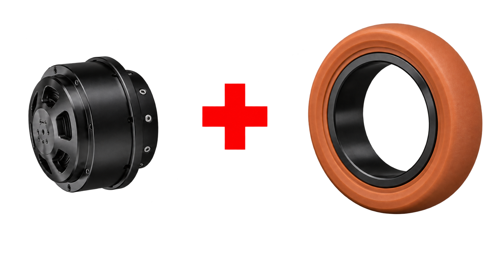
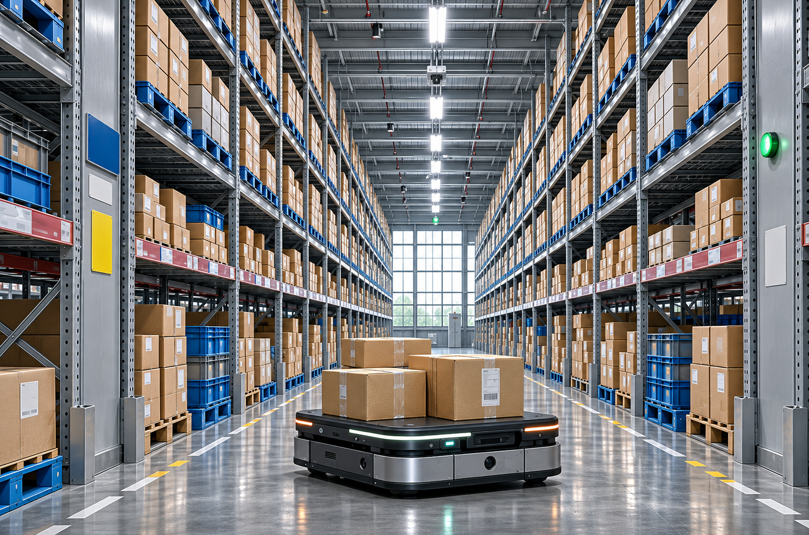
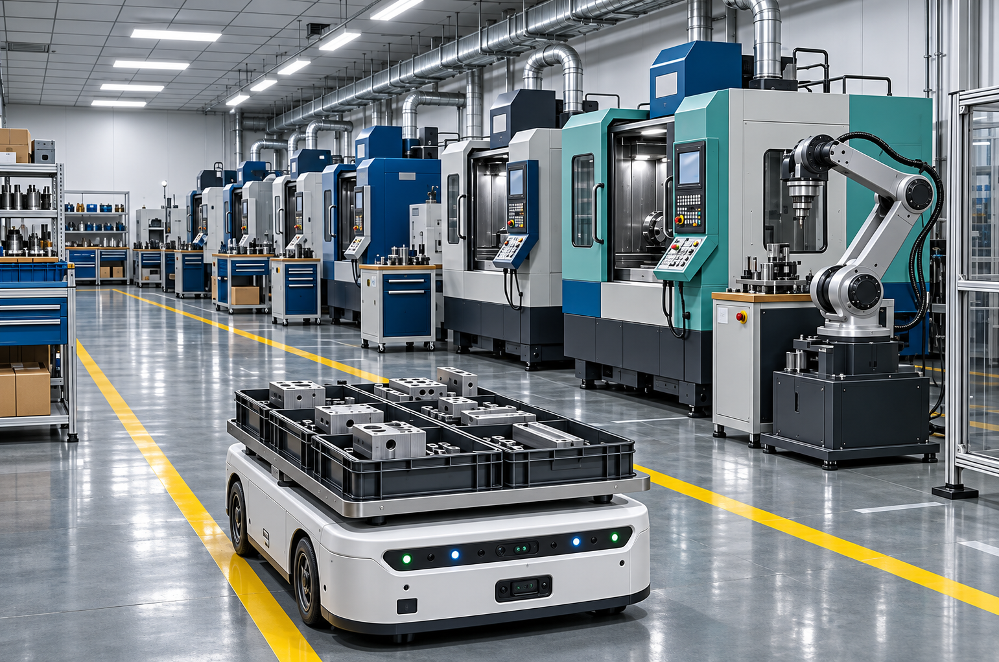
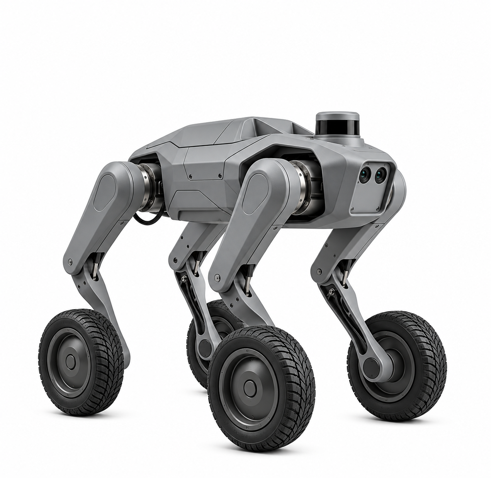
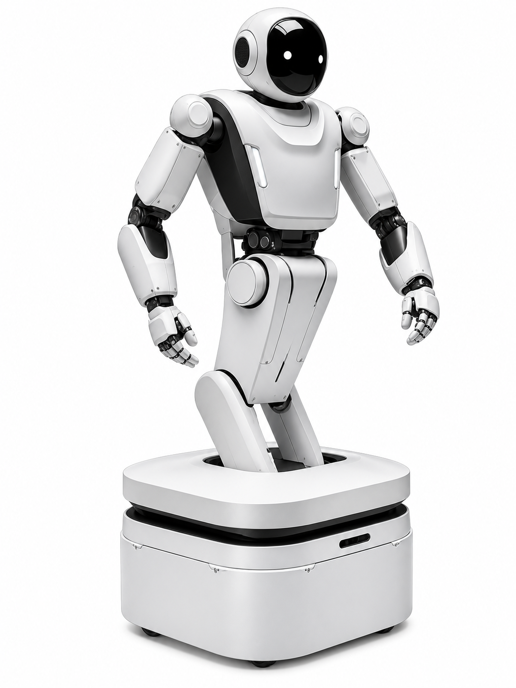
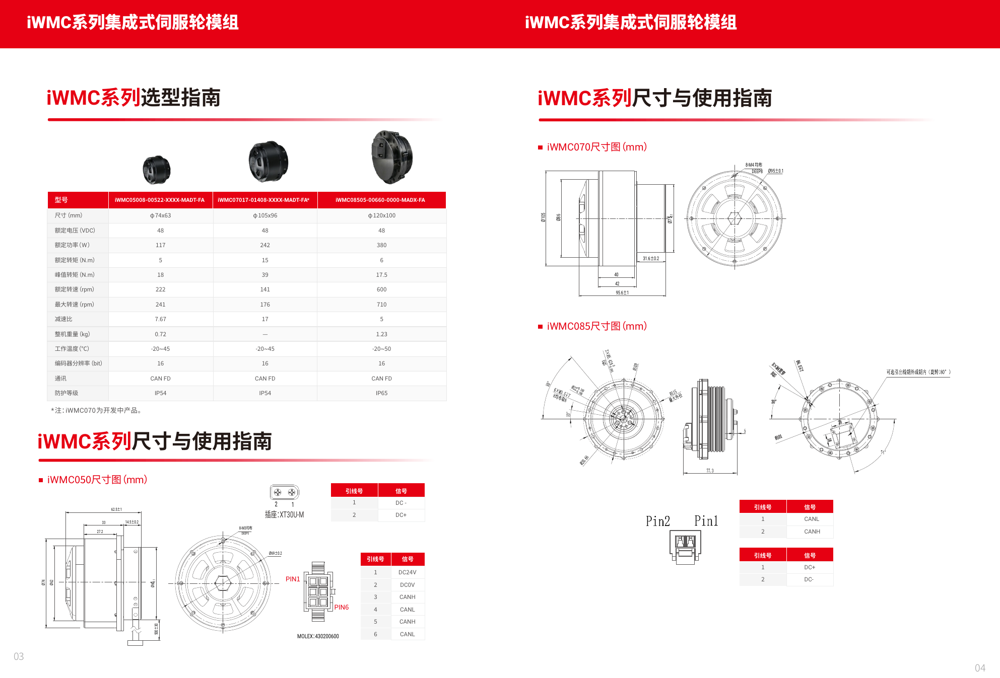
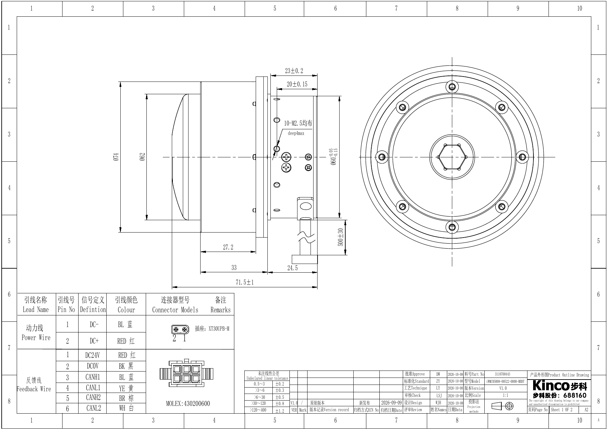

iWMC050轻量灵活
5 N·m · 222 rpm
支持最小轮径 90 mm
从电机到轮毂，从控制到反馈，iWMC 把移动底盘关键执行部件收进一个紧凑模组，减少系统集成工作量。
电机、驱动器、减速器和编码器一体化，节省安装空间与线束。
单圈通讯式磁编码器提供位置反馈，配合 CAN FD 方便接入控制系统。
峰值扭矩可达额定值约三倍，应对起步、爬坡和越障动态负载。
iWMC050/070 可选抱闸，适合停机保持、斜坡驻车与安全场景。
支持聚氨酯与无包胶轮毂方案，按抓地力、耐磨性和载荷灵活配置。
不同型号提供 IP54 或 IP65 防护，适应多种室内外工况。
围绕移动机器人控制器的常用架构设计电源、反馈和通信接口，减少二次开发与现场排查成本。
统一 DC 母线输入，适合移动机器人电池系统与工业电源架构。
面向实时运动控制的总线接口，支持位置、速度和状态数据交互。
轮毂、胶轮与抱闸按项目需求组合，覆盖灵活移动到稳态承载。
以下数据来自 iWMC 系列宣传手册，iWMC070 为开发中产品，最终参数以正式技术文件为准。
| 参数项目 | iWMC050 05008-00522 | iWMC070 07017-01408 | iWMC085 08505-00660 |
|---|---|---|---|
| 外形尺寸 | φ74 × 63 mm | φ105 × 96 mm | φ120 × 100 mm |
| 额定电压 | 48 VDC | 48 VDC | 48 VDC |
| 额定功率 | 117 W | 242 W | 380 W |
| 额定扭矩 | 5 N·m | 15 N·m | 6 N·m |
| 峰值扭矩 | 18 N·m | 39 N·m | 17.5 N·m |
| 额定转速 | 222 rpm | 141 rpm | 600 rpm |
| 减速比 | 7.67 | 17 | 5 |
| 整机重量 | 0.72 kg | — | 1.23 kg |
| 防护等级 | IP54 | IP54 | IP65 |
从室内物流到智能制造，从服务机器人到动态四足平台，iWMC 以紧凑结构和可选轮毂方案适配不同移动方式。
面向料箱搬运、自动配送、产线物流和楼宇配送，适配窄通道与低底盘。

小型 AMR、服务机器人与轮式人形底盘。
中型物流底盘的开发中规格，兼顾扭矩与体积。
大轮径、较高承载和复杂工业工况。
面向产线配送、机加工上下料、电子装配和厂内多车协同。

面向四足机器人、轮腿复合平台和智能巡检设备，关注动态响应与冲击工况下的可靠性。


料箱搬运、分拣补货和楼宇配送，穿梭窄通道并稳定启停。
机加工、电子装配与柔性产线之间的物料转运和多车协同。
面向园区、能源和厂区巡检，兼顾动态越障与全天候运行。
从移动货架到展厅导览，让设备在有限空间内灵活转向。
宣传手册与 MBDT 型号完整图纸均可直接打开或下载。

